Q1.Write a program to show that example of pre-increment ?
#include <stdio.h> #include <conio.h> #include <dos.h> void main(){ int num1,num2; clrscr(); printf("Enter the number : "); scanf("%d",&num1); num2 = ++num1; printf("\n Value of num1 = %d ",num1); printf("\n Value of num2 = %d ",num2); delay(3000); }
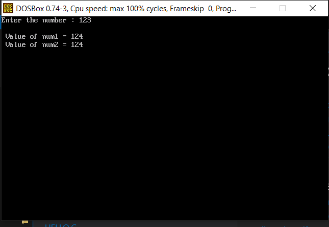
Q2.Write a program to show that example of post-increment ?
#include <stdio.h> #include <conio.h> #include <dos.h> void main(){ int num1,num2; clrscr(); printf("Enter the number : "); scanf("%d",&num1); num2 = num1++; printf("\n Value of num1 = %d ",num1); printf("\n Value of num2 = %d ",num2); delay(3000); }
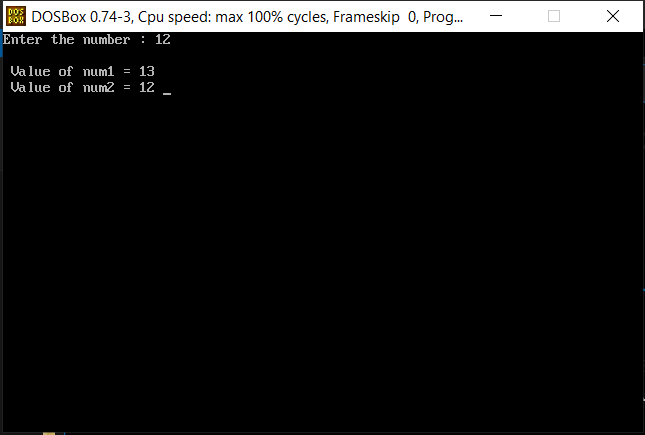
Q3.Write a program to show that example of pre-decrement ?
#include <stdio.h> #include <conio.h> #include <dos.h> void main(){ int num1,num2; clrscr(); printf("Enter the number : "); scanf("%d",&num1); num2 = --num1; printf("\n Value of num1 = %d ",num1); printf("\n Value of num2 = %d ",num2); delay(3000); }
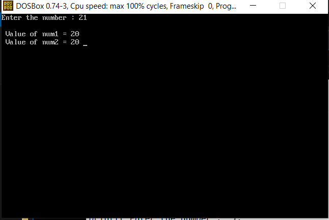
Q4.Write a program to show that example of post-decrement ?
#include <stdio.h> #include <conio.h> #include <dos.h> void main(){ int num1,num2; clrscr(); printf("Enter the number : "); scanf("%d",&num1); num2 = num1--; printf("\n Value of num1 = %d ",num1); printf("\n Value of num2 = %d ",num2); delay(3000); }
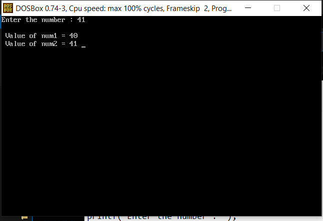
Q5.Write a program to enter 2 numbers from user add the number and show the answer , again take 2 number from user subtract the number display the answer ,again take 2 number from user multiply the number display the answer and ,again take 2 number from the user divide the number display the answer ,again take 2 number find the remainder and display the answer ?
#include <stdio.h> #include <conio.h> #include <dos.h> void main(){ float num1,num2; // for all except remainder int num3,num4,i=1; // for remiander clrscr(); for(i;i<=5;i++){ if(i<=4){ printf("Enter num1 : "); scanf("%f",&num1); printf("Enter num2 : "); scanf("%f",&num2); } if(i==5){ printf("To find remainder\n"); printf("Enter num3 : "); scanf("%d",&num3); printf("Enter num4 : "); scanf("%d",&num4); } i==1?printf("Value after additon of num1 and num2 : %f\n ",num1+num2): i==2?printf("Value after subtraction of num1 and num2 : %f \n",num1-num2): i==3?printf("Value after multiplication of num1 and num2 : %f \n",num1*num2): i==4?printf("Value after division of num1 and num2 : %f \n",num1/num2): i==5?printf("Remainder of num3 and num4 : %d \n",num3%num4):printf(""); printf("\n"); } delay(3000); }
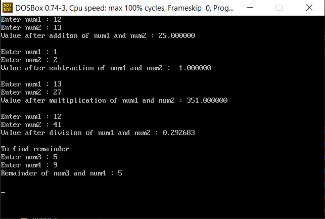
Write a program to enter a number from the user ,the length of the number is depend on the user ,programmer should print the last digit of number ?
#include <stdio.h> #include <conio.h> #include <dos.h> void main(){ long int num1; clrscr(); printf("Enter a number : "); scanf("%ld",&num1); printf("The last digit of the number is : %ld ", num1%10 ); delay(3000); }
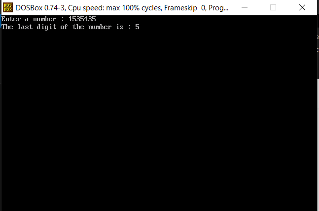
Q7.Enter a decimal number from the user (float) and print the right hand side of the decimal point ?
Q8.Enter a number from user and find out cube of numbers ?
#include <stdio.h> #include <conio.h> #include <dos.h> void main(){ int num,cube; clrscr(); printf("Enter a number : "); scanf("%d",&num); cube = num*num*num; printf("\nCube of the number %d : %d",num,cube); delay(3000); }
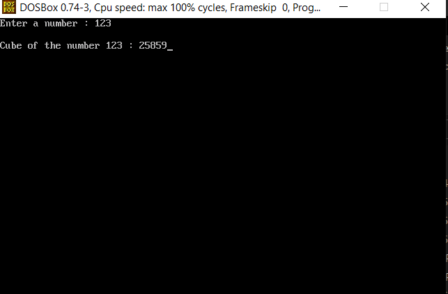
Q9.Enter float number from user and round of the number ?
#include <stdio.h> #include <conio.h> #include <dos.h> void main(){ float num,diff; int rd; clrscr(); printf("Enter a number : "); scanf("%f",&num); rd = num; if(num-rd>=0.5){ rd= rd+1; } printf("The roundoff value is : %d ",rd); delay(3000); }
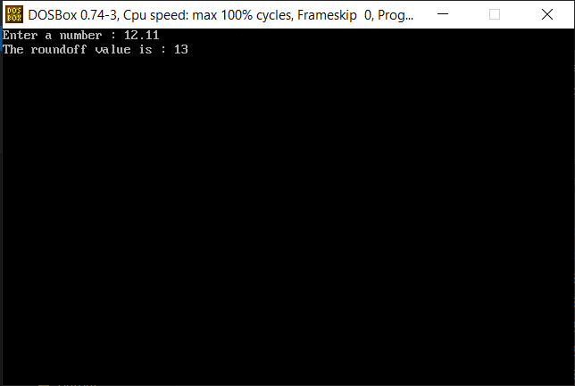
Q10.Enter a lower case character from user and print it into upper case ?
#include <stdio.h> #include <conio.h> #include <dos.h> void main(){ char ch; clrscr(); printf("Enter a lower case character : "); scanf("%c",&ch); ch = ch - 32; printf("Upper case character : %c ",ch); delay(3000); }
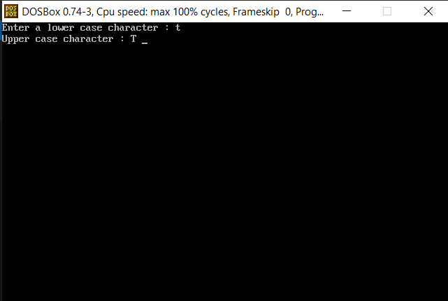
Q11.Enter marks of students and calculate average of student’s marks ?
#include <stdio.h> #include <conio.h> #include <dos.h> void main(){ int i; int marks[5],sum=0; //let the students be 5 clrscr(); for(i=0;i<5;i++) { printf("Enter the marks of student %d : ",i+1); scanf("%d",&marks[i]); sum = sum+marks[i]; } printf("Average marks of 5 students : %d",sum/5); delay(3000); }
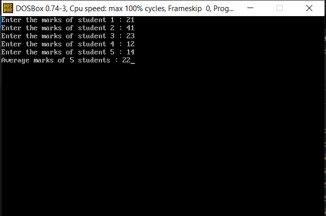
Q12.Calculate simple interest = (P x R x T)/ 100
#include <stdio.h> #include <conio.h> #include <dos.h> void main(){ long int p,r,t; clrscr(); printf("Enter Principal amount : "); scanf("%ld",&p); printf("\nEnter rate of interest per year : "); scanf("%ld",&r); printf("\nEnter Time in years : "); scanf("%ld",&t); printf("Final Evaluated simple interest will be : %ld ",p*r*t/100); delay(3000); }
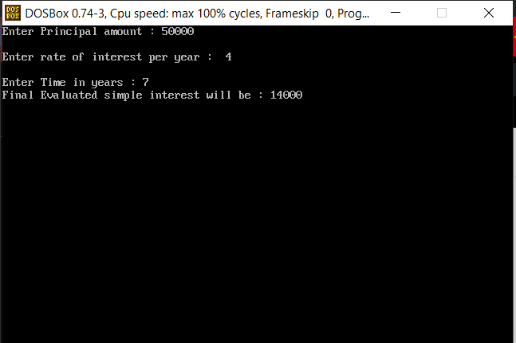